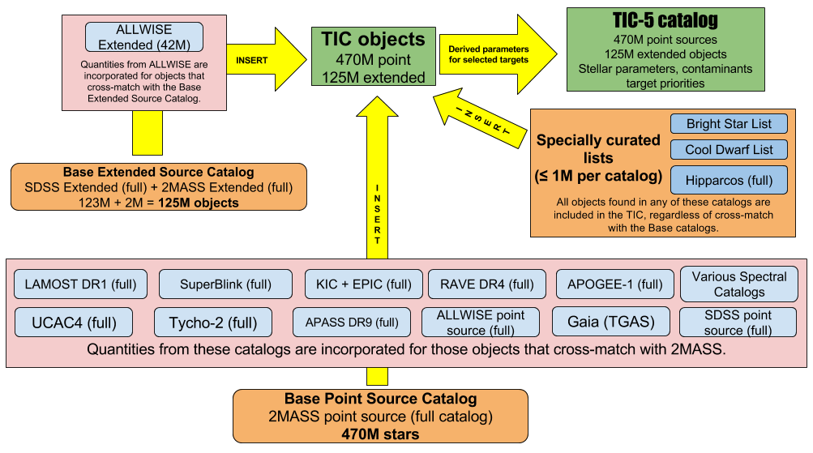

The TESS Guest Investigator program is intended to enable the community to participate in science investigations using TESS, outside of the core mission science goals. The program enables teams to propose the collection of new 2-minute cadence targets, and provides funding to US investigators to analyze 2-minute cadence and full-frame image data.
The TESS primary mission duration is two years. The first year is spent in the southern ecliptic hemisphere and is corresponds to TESS Guest Investigator Program Cycle 1, the second year observed the northern ecliptic hemisphere and it Cycle 2. During the primary mission, the majority of the 2-minute cadence targets observed will be taken from the TESS Candidate Target list (CTL). In each cycle around 20,000 2-minute cadence target slots will be assigned to the Guest Investigator Program.
There will be no exclusive-use data rights to observations collected by TESS. All data will be made available through the MAST public archive once data processing and validation is complete.
The Cycle 1 proposal call is now closed.
Permitted science areas
We welcome proposals addressing compelling scientific questions in almost any area of astrophysics and planetary science providing the required observations are amenable to the operational characteristics and constraints of the mission. The science motivation may include, but is not limited to, exoplanet characterization, stellar astrophysics, galactic and extragalactic astrophysics, and solar system science.
The primary purpose of the TESS Guest Investigator Program is to enhance and maximize the science return from TESS. The program facilitates and supports both 2-minute cadence observations with TESS and research undertaken with the FFIs. Any area of astrophysics may be proposed. However proposals to detect planet transits within the 2-minute cadence data of the one hundred thousand (100,000) top-prioritized, southern hemisphere Candidate Target List (version 5.0) targets are not solicited, and will be considered non-compliant. No restrictions are imposed on science using the full-frame image data. Proposals for exoplanet detection and characterization using full frame image data are encouraged. To aid in proposal preparation, we have made a comma-separated variable file available that contains this list of top-prioritized targets.
Proposals may utilize either the 2-minute cadence, the full-frame image data, or both. All science proposals must be compelling and carefully justified scientifically and technically.
The scientific justification of a GI proposal should focus on a compelling science investigation, that requires the collection of new TESS data to succeed. The proposed TESS Guest Investigation must clearly enhance the science return of the TESS mission. The proposal may include limited theoretical components, limited ground-based follow-up, software development and/or data simulation that strengthens the proposal. At least 70% of the work effort should be focused on exploiting TESS data products. Proposed investigations that are otherwise dominated in effort by theory, ground-based observing, or archival data analysis will be non-compliant. The ROSES solicitation provides alternative opportunities to exploit or support the TESS mission in these areas:
- Investigations dominated by theoretical effort should respond to the Appendix D.4 Astrophysics Theory Program (ATP) solicitation, or Appendix E.3 the Exoplanet Research Program (XRP).
- Investigations dominated by archival data analysis effort should respond to the Appendix D.2 Astrophysics Data Archive Program (ADAP) solicitation.
- Investigations dominated by ground-based data collection and/or analysis efforts should respond to the Appendix E.3 the Exoplanet Research Program (XRP), or the NSF Astronomy and Astrophysics Research Grants Program (AAG).
Proposals must clearly describe the plans to make any new software or supporting data publicly available. Software developed with TESS GI funds must add value to the TESS science community, be free and open source. Exoplanet-related ground-based follow-up data collected through TESS GI funding support must be made publicly available in a timely fashion at the NASA Exoplanet Science Institute (NExScI) ExoFOP service - NASA's repository for supporting exoplanet data. Supporting data for non-exoplanet science should be archived through a public data archive service such as the Mikulski Archive at Space Telescope (MAST) higher level data product service.
Evaluation criteria
Proposals submitted in response to the Cycle 1 GI call will be evaluated with respect to the criteria specified in Section C.2 of the NASA Guidebook for Proposers, which are intrinsic merit, relevance to the GI solicitation, and the realism/reasonableness of the proposed work effort and resources. In addition to the factors for intrinsic merit given in the NASA Guidebook for Proposers, intrinsic merit includes the following factors:
- The suitability of using the TESS survey and data products for the proposed investigation;
- The extent to which the investigation complements and enhances the anticipated science return from the TESS mission;
- The degree to which the proposed investigation places demands upon mission resources; and
- The degree to which the proposed investigation capitalizes on the unique capabilities of TESS.
The proposed TESS Guest Investigation must clearly enhance the science return of the TESS mission. The scientific justification of the proposal should focus on a compelling TESS science investigation, that requires TESS data to succeed. The proposal may include limited theoretical components, unique ground-based follow-up, software development and/or data simulation that strengthens the proposal. However, at least 70% of the work effort should be focused on utilizing TESS data products.
Proposers must take into account the difference between science that can be achieved exclusively using full-frame image data and science that requires new observations at 2-minute cadence.
All proposals are peer-reviewed and ranked by a panel of professional volunteers, followed by ratification from NASA Headquarters. The members of the peer-review panel will not be disclosed. The deliberations of the panel will be disclosed to PIs only after ratification by the selecting official.
NASA recognizes and supports the benefits of having diverse and inclusive scientific, engineering, and technology communities and fully expects that such values will be reflected in the composition of all panels and teams including peer review panels (science, engineering, and technology), proposal teams, science definition teams, and mission and instrument teams.
Availability of funds
It is anticipated that up to $2.5M in Cycle 1 will be available through this solicitation for the support of approximately 30 Guest Investigations. Note that additional unfunded Guest Investigation targets may be selected and observed, if target resources permit. TESS 2-minute cadence observations are open to all scientists at U.S. or non-U.S. institutions. TESS GI funding is open to all individuals who are identified as Principal Investigators and employed at U.S. institutions. Scientists participating in the TESS mission, including members of the Follow-up Team, are permitted to propose to the GI program and are subject to the same program rules as the rest of the science community.
There are typically two categories of TESS GI proposals, investigators are free to select the catagory that best reflects their scope of their proposed work. The dollar amounts assigned to each proposal catagory are typical award amounts and not upper limits.
- Small proposals - proposals of limited scope that have typical budgets of approximately $50,000.
- Large proposals - proposal of wide-ranging scope and science yield. Large proposals must deliver a clear benefit for the broader scientific community and have typical budgets of approximately $200,000
Funding for selected programs typically starts upon availability of data to the public archive at MAST. Note that there is no exclusive use period associated with any TESS data.
Eligibility
Application to the TESS GI program is typically open to all investigators, including those from outside the U.S. under NASA's no-exchange-of-funds policy.
Investigators who are not affiliated with a U.S. institution are not eligible for funding through this program, but may submit proposals that will be reviewed and ranked along with eligible proposals for the purpose of allocating targets.
Funding through the NASA TESS GI Program is available only to scientists at U.S. institutions who are identified as the Principal Investigators (PIs). U.S. based Co-Investigators (Co-Is) on foreign-led proposals do not qualify for funding. Funding for accepted target proposals will be initiated only after the relevant observations have begun. Proposers from non-U.S. institutions are strongly encouraged to include a letter of commitment promising financial support.
In accordance with Public Law 113--76, Division B, Title V, Section 532, NASA cannot support bilateral participation, collaboration, or coordination with China or any Chinese-owned company or entity, whether funded or performed under a no-exchange-of-funds arrangement. See Section III(c) of the ROSES-2016 NRA for more information on these restrictions.
Target selection
TESS Input Catalog (TIC)
To meet the primary mission goals, an all-sky catalog was generated to act as a basis for target selection. The TESS Target Selection Working Group (TSWG) was tasked with the creation and maintenance of the catalog with the aim of compiling every optically luminous, persistent object in the sky down to the limits of available wide-field photometric catalogs including both point sources and extended sources. This enables the selection of optimal targets to search for small transiting planets and allows flux contamination to be calculated in an optimal aperture for each target (critical due to the 21 arcsec TESS pixels). The resulting catalog is the source from which the >200,000 primary mission targets will be selected and is known as the TESS Input Catalog (TIC).
The TIC was assembled by merging three base catalogs and many auxiliary catalogs to create a full list of point sources, extended sources, and other special objects of interest that could be observed by TESS. The resulting full list of TIC objects is used as input to a set of algorithms to determine the effective physical parameters and prioritization of each. The final TIC contains data for ~596 million objects, including 470 million point sources, 125 million extended sources, and 1 million special objects. A visual overview of the input catalogs and methodology used to construct the TIC is shown in the schematic below.

Overview of the photometric catalogs used to construct the TESS Input Catalog (TIC). Yellow arrows depict the order that catalogs are crossmatched and or merged. The final TIC (TIC 5 as of 2017-06-04) is represented by the green box at the upper right. Image Credit: Stassun et al. 2017.
Candidate Target List (CTL)
A subset of TIC objects was isolated to select the >200,000 targets for TESS 2 min cadence observations in service of the mission's primary science requirements. This list is known as the Candidate Target List (CTL). The CTL was constructed by applying strict cuts to the ~470 million point sources in the TIC that included cuts in magnitude, reduced proper motion, and lack of calculated parameters (T eff, radius, and contamination ratio). The resulting list is ranked by priority; a function of sky position, stellar radius, brightness, and contamination, to provide a list of the ~20 million top ranked stars. The CTL currently contains both dwarf and subgiant stars (giants have been removed). Once parallaxes from the second Gaia Data Release (DR2) are available, dwarfs and subgiants can be differentiated.
A complete description of the input and methods used to construct the TIC and CTL are provided in the TIC paper prepared by the TSWG team (Stassun et al. 2017, available here). The current full versions of the TIC and CTL are hosted publicly at the Mikulski Archive for Space Telescopes (MAST, available here) and a high priority subset of the CTL is available via the Filtergraph data visualization system (available here). Subsequent versions of the TIC and CTL containing additional data (e.g. Gaia) will be generated and made available leading up to the TESS launch.
Guest Investigators must include the TIC identification number when selecting targets if there is an entry in the TIC. For targets not in the TIC, GIs must provide the coordinates of the source and a TESS magnitude. Software for estimating TESS magnitudes will be available. The latest version of the TIC is available from the MAST and described further in the Data Access page. Documentation for the TIC can be found on arXiv. There will be several deliveries of preliminary versions of the TIC prior to launch to allow testing. A formal delivery of the TIC will occur a few months before launch.
Core science targets
To aid in proposal preparation we have made a comma-separated variable file available that contains the list of the top 100,000 priority targets in the southern ecliptic hemisphere.
Observability of targets
We have developed software to determine whether any target can be observed by TESS and for how many sectors. Details are provided on our proposal tools page
Target table
The TESS GI program office requires that if a target is in the TIC, GI proposers must provide only the following columns from the TIC in comma separated value (csv) format:
- TIC ID (if available)
- Right Ascension (decimal degrees)
- Declination (decimal degrees)
- Proper motion in Right Ascension (mas/yr)
- Proper motion in Declination (mas/yr)
- TESS mag
additional columns that should be included if necessary are
- Common name of target
- Extended flag
- Special handling flag
- Remarks
Proposal tools and tips to help create target tables can be found on our proposal tools page. We encourage users to follow this custom tutorial provided by the MAST.
We have provided two examples target tables with the format we require.
Moving targets
Moving aperture targets should be flagged as requiring special handling at proposal submission. Specify in the comments of the target list that this is a moving target. The proposal should discuss in the science case both the minimum and ideal acceptable duration of observations of the target. We will work with the proposal team to generate a delivery format for their targets of interest. Note that this is only necessary if 2-minute cadence data is requested.
Target of Opportunity Observations
Target of Opportunity Observations (TOOs) of rapidly evolving phenomena whose occurrence is not predictable at the time of the proposal deadline. Due to TESS mission constraints, TOO-triggered target definitions can only be uploaded to the spacecraft during uplinks that occur once every 13.7 days. Details regarding the circumstances in which a TOO is "triggered" must be included in the scientific justification and on the target form. TOO proposals must also include an estimated duration of the event, as well as an estimated probability for triggering the observations; the latter will be used in the accounting of total allocated targets. TOOs remain active during Cycle 1; TOOs not carried out during the cycle may be re-proposed to subsequent solicitations. TOO observations would commence after the spacecraft upload following the trigger event, which could be as long as 2 months after the event. The impact to science of such a potential delay must be addressed in proposals requesting TOO observations.
Solicitations
The proposal solicitation is available from the NSPIRES website.
Submission process
The TESS GI program uses a two-phase proposal process. A Phase-1 proposal shall comprise the science/technical justification; proposals requesting funds need to include a budget narrative, describing in sufficient detail how the proposed funds will be used to achieve the goals outlined in the proposal. Only proposers whose Phase-1 proposals are accepted will be invited to submit budget proposals in Phase-2. It is not necessary for the PI of the Phase-2 proposal to be the science PI. Proposal content, including the list of investigators, must remain consistent between Phase-1 and Phase-2 proposals. All proposal materials will be submitted electronically.
-
All Proposers must submit their Phase-1 proposals electronically through the Astrophysics Research Knowledgebase (ARK)/ Remote Proposal System (RPS) website. If you haven't used ARK/RPS before, get an account now (it's easy, but don't wait till the last minute); please refer to the ARK/RPS instructions for TESS.
-
You must "verify" the form, and pass the checks, before you can submit your proposal.
-
Target tables for 2-min cadence observation proposals are to be submitted through ARK/RPS. There are two different ways to provide your target list: Into the RPS target form itself, or as a separate CSV file upload - the latter will only become possible after you submit your RPS form.
-
The Scientific/Technical/Management section of proposals is limited to four pages, this includes references. No table of contents in the body of the proposal is required. No supporting material (e.g., curriculum vitae (CV), pending/current support) is required or permitted. An fifth page can be used for a target table only.
-
An optional MS Word template for the Scientific/Technical/Management is available.
-
The Scientific/Technical/Management section must be uploaded to the RPS website as a PDF file after you have submitted your RPS proposal form.
All proposal materials must be submitted electronically by 4:30 p.m. Eastern time on the due date for this program given in Section 3 in order to be included in the proposal review for this cycle of the TESS Guest Investigator program. Note that the 4:30 p.m. deadline supersedes the deadline stated in the Guidebook for Proposers and in the ROSES Summary of Solicitation.
NASA uses a single, uniform set of instructions for the submission of ROSES proposals. These instructions are given in the NASA Guidebook for Proposers (http://www.hq.nasa.gov/office/procurement/nraguidebook/). TESS GI Proposers should follow these instructions, except where they are overridden by the instructions given in the ROSES Summary of Solicitation or in this Appendix.
Proposal templates
We have made available proposal templates to aid users in writing GI proposals. Use of these templates is not required.
Director's Discretionary Targets
A small part of the pixel budget may be allocated by the project as Director's Discretionary Targets (DDT), which is intended to facilitate observations that address scientific topics missed in the proposal review process. More information and deadlines are available from the DDT program page.